Problemas interactivos de progresiones aritméticas y geométricas
Resuelve los siguientes problemas:
1Se quieren colocar 8 montones de libros de forma que en el primero se pongan 2 libros y en cada uno de ellos dos más que en el anterior. ¿Cuántos libros se quieren colocar en total?
Los montones de libros que se quieren colocar corresponden a los 8 primeros términos de la progresión aritmética (an) = (2, 4, 6, 8, ...), cuya distancia es d = 2.
Por tanto, a8 = 2 + (8 − 1) · 2 = 16
Entonces, el número de libros que se quiere colocar es la suma de los ocho primeros términos de esta sucesión: 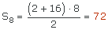
Por tanto, se prentenden colocar 72 libros.
2El cateto mayor de un triángulo rectángulo mide 16 cm. Halla la medida de los otros dos lados sabiendo que los tres lados del triángulo están en progresión aritmética.
Hipotenusa 
Cateto menor 
 Organizamos la información:
Organizamos la información:
Cateto menor  a1
a1
Cateto mayor  a2 = 16 cm
a2 = 16 cm
Hipotenusa  a3
a3
Diferencia  d
d
 Por tratarse de una progresión aritmética se verifica:
Por tratarse de una progresión aritmética se verifica:
a3 = a2 + d = 16 + d
a1 = a2 − d = 16 − d
 Por otro lado, aplicando el teorema de Pitágoras se tiene:
Por otro lado, aplicando el teorema de Pitágoras se tiene:
a32 = a12 + a22
 Sustituyendo los valores de a1, a2 y a3 en la expresión anterior se tiene:
Sustituyendo los valores de a1, a2 y a3 en la expresión anterior se tiene:
(16 + d)2 = (16 − d)2 + 162
162 + d2 + 32d = 162 + d2 − 32d + 162
64d = 162
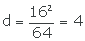
Por tanto, la distancia de la progresión aritmética que siguen los lados de este triángulo es d = 4.
Así tendremos:
Hipotenusa a3 = a2 + d = 16 + 4 = 20
a3 = a2 + d = 16 + 4 = 20
Cateto menor a1 = 16 − 4 = 12
a1 = 16 − 4 = 12
3Calcula la fracción generatriz del número decimal periódico exacto 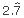 mediante la suma de una progresión geométrica:
| = | |
Podemos escribir este número como:
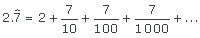
Observemos que el número resulta ser la suma de 2 más la suma de los términos de la progresión geométrica determinada por: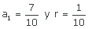
Entonces, pordemos escribir:
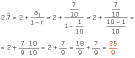
4Calcula la fracción generatriz del número decimal periódico mixto 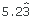 mediante la suma de una progresión geométrica:
| = | |
Podemos escribir este número como:
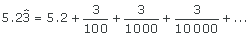
Observemos que el número resulta ser la suma de 5.2 más la suma de los términos de la progresión geométrica determinada por: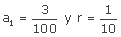
Entonces, pordemos escribir:
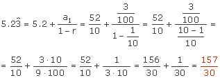
5Dado un cuadrado de lado 2 cm, construimos otro dentro de él sobre los puntos medios de sus lados y por el mismo proceso otro cuadrado dentro de este mismo y así sucesivamente. Calcula la suma de las áreas de los infinitos cuadrados construidos de esta manera.
S = cm2
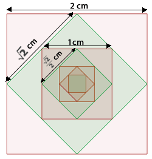
Llamamaos A1 al área del cuadrado de partida, A2 al área del segundo cuadrado costruido, A3 al siguiente y así sucesivamente.
 A1 = 22 = 4 cm2
A1 = 22 = 4 cm2
 A2
A2
Para hallar el área de A2 debemos calcular la medida de su lado, para lo que basta observar el triángulo rectángulo que se señala en la figura y averiguar la medida de su hipotenusa. 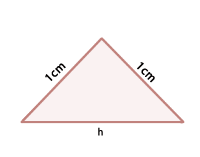
Cada cateto mide 1 cm por ser la mitad del lado del cuadrado original. Entonces tenemos:
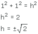
Por ser h una medida sólo nos quedamos con la solución positiva, con lo que 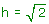
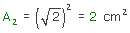
 A3
A3
Para hallar el área de A3 debemos calcular la medida de su lado, para lo que basta observar el triángulo rectángulo que se señala en la figura y averiguar la medida de su hipotenusa. 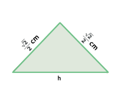
Cada cateto mide 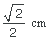 por ser la mitad del lado del cuadrado anterior. Entonces tenemos:
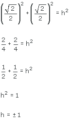
Por ser h una medida sólo nos quedamos con la solución positiva, con lo que h = 1
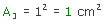
 A4
A4
Para hallar el área de A4 debemos calcular la medida de su lado, para lo que basta observar el triángulo rectángulo que se señala en la figura y averiguar la medida de su hipotenusa. 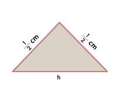
Cada cateto mide 0.5 cm por ser la mitad del lado del cuadrado anterior. Entonces tenemos:
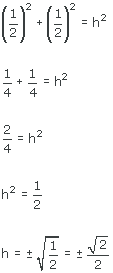
Por ser h una medida sólo nos quedamos con la solución positiva, con lo que 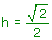
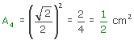
 Las áreas de los cuadrados forman una progresión geométrica: 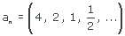 de razón 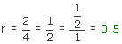
Las áreas de los cuadrados forman una progresión geométrica: 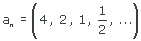 de razón 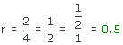
Por tanto, la suma infifinita de 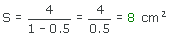
6Calcula la suma de todos los números pares de 3 cifras.
Observemos que los número pares de 3 cifras pertenecen a la progresión aritmética an = (100, 102, 104, 106, ...) cuya distancia es d = 2
Además la cantidad de números pares de tres cifras es la cantidad de números pares que hay entre 100 y 998. Calculemos dicha cantidad:
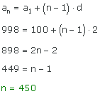
Por tanto, nuestro problema se reduce a calcular la suma de los 450 primero términos de la progresión aritmética an = (100, 102, 104, 106, ...)
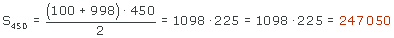
7Sabiendo que x, 3x − 4 y 9x − 20 son tres números que se encuentran en progresión geométrica, calcula el valor de x.
x =
¿Sabrías decir cuál es la razón de esta progresión geométrica?
r =
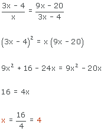
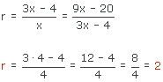
8Un coronel que está a cargo de un pelotón de 820 soldados, quiere formarlos en triángulo, de manera que la primera fila tenga 1 soldado, la segunda 2, la tercera 3 y así sucesivamente. ¿Cuántas filas se formarán?
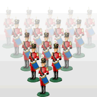
Observemos que la colocación de los soldados por filas forma una progresión aritmética (an) = (1, 2, 3, ..., 820) de distancia d = 1, cuyo primer término es a1 = 1 y cuya suma es Sn = 820
Lo que debemos hallar es el valor de n.
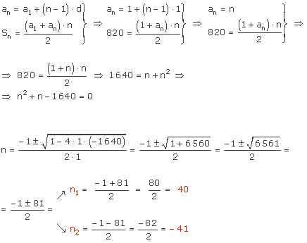
La solución negativa no es válida, porque nos referimos al número de filas que formarán los soldados.
Por tanto, se formarán 40 filas.
9Un pentágono cuyo perímetro es de 40 cm tiene sus lados en progresion aritmética. Sabiendo que el lado mayor es de 12 cm, ¿sabrías decir cuál es la medida del lado menor?
cm
Como las medidas de los lados están en progresión aritmética existe una diferencia d de modo que las medidas de los lados, de mayor a menor, serán:
12 cm
12 − d cm
12 − 2d cm
12 − 3d cm
12 − 4d cm
Entonces como el perímetro es de 40 cm, se tiene:
12 + (12 − d) + (12 − 2d) + (12 − 3d) + (12 − 4d) = 40
60 − 10d = 40
20 = 10d
d = 2
Entonces, la medida del lado menor es 12 − 4 · 2 = 12 − 8 = 4 cm
10La campana de la iglesia del pueblo de Juan marca cada hora dando tantas campanadas como indique dicha hora. Además, cada media hora da una campanada. Indica el número de campanadas que da a lo largo de un día.
campanadas
En primer lugar, como cada media hora da una campanada y un día tiene 24 horas, estas campanadas sumarán un total de 23, pues debemos tener en cuenta que la campanada de la "hora 24 y media" ya correspondería a un nuevo día.
Las campanadas que se dan cada hora en punto siguen una progresión aritmética cuyo primer término es a1 = 1 y d = 1. Entonces, para saber el número total de campanadas que se dan tendremos que calcular la suma de los 12 primeros términos de esta progresión aritmética y después la suma de los 11 primeros términos.
Nota: Aunque en principio habrías podido pensar que había que calcular la suma de los 24 primeros términos, ten en cuenta que las horas que se dan son analógicas, con lo que tras las 12 del medio día no se darían 13 campanadas sino 1 para marcar las 13:00 h, no se darían 14 campanadas sino 2 para marcar las 14:00 h y así sucesivamente. Además no contemplamos en la segunda vuelta los 12 primeros términos sino sólo los 11 primeros, porque el duodécimo ya correspondería a las 12 de la noche que se considera parte del día siguente.
Entonces, calculamos:
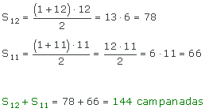
Entonces, el número total de campanadas que se dan en un día son:
23 + 144 = 167
Si tienes dudas puedes consultar la teoría